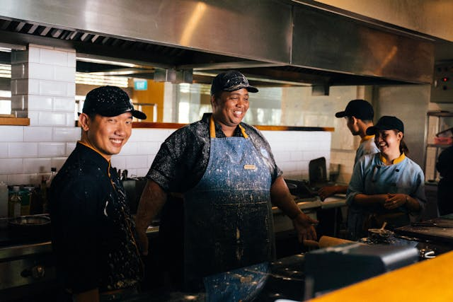

Our Team
At the heart of our culinary journey is a team of passionate chefs and food enthusiasts dedicated to bringing you the best recipes from around the world. Each member of our team brings their unique expertise, creativity, and love for food, ensuring that every dish we share is crafted with care and authenticity. Together, we are committed to inspiring your culinary adventures, one recipe at a time.
Our Chefs

Chef Alexander Bennett
Founder & Executive Chef
Chef Alexander Bennett is the visionary behind YumYum, bringing over 20 years of culinary experience to the table. His passion for food began at a young age, inspired by his grandmother’s traditional recipes and the vibrant flavors of his multicultural upbringing. After honing his skills in some of the world’s top kitchens, Chef Alexander decided to create a platform where he could share his love for cooking with others.
Through YumYum, Chef Alexander hopes to inspire others to explore the joy of cooking and to create memorable meals that bring people together.

Chef Rafael Santiago
Grill Master & Meat Specialist
Hailing from the vibrant streets of São Paulo, Brazil, Chef Rafael Santiago is our resident grill master. With a deep passion for barbecue, Rafael has spent years perfecting the art of grilling, from traditional Brazilian churrasco to American-style smoked meats. His philosophy is simple: great food starts with great ingredients and the perfect amount of heat. Rafael’s recipes are designed for both indoor and outdoor cooking, making them accessible to all meat lovers.
Chef Ayesha Malik
Culinary Director & Global Cuisine Expert
Chef Ayesha Malik’s culinary journey has taken her across continents, from her roots in Pakistan to kitchens in London, Dubai, and beyond. Ayesha’s expertise lies in global cuisine, particularly in creating fusion dishes that celebrate the diversity of flavors from around the world. Her approach is deeply rooted in the belief that food is a universal language, capable of bringing people together. Ayesha’s recipes are a testament to her creativity and her commitment to making international dishes accessible to everyone.
Chef Emily Nguyen
Plant-Based Chef & Nutritionist
Chef Emily Nguyen is a pioneer in the plant-based culinary world, combining her expertise as a chef and a certified nutritionist to create dishes that are both delicious and nutritious. Born to Vietnamese immigrants and raised in California, Emily’s cooking reflects her multicultural background, with a focus on fresh, vibrant flavors. Her recipes emphasize whole foods and are designed to nourish the body and soul, proving that plant-based eating can be both satisfying and flavorful.
Chef Michael Romano
Culinary Director
Chef Michael Romano is the creative force behind the diverse and innovative recipes at YumYum. With a career spanning over 15 years in the culinary world, Chef Michael has developed a deep understanding of global flavors and modern cooking techniques. His culinary journey began in the bustling kitchens of New York City, where he quickly made a name for himself as a talented and imaginative chef.
Chef Michael’s passion for food is matched by his commitment to educating others. He believes that cooking should be fun and accessible to everyone, and he’s dedicated to helping home cooks build their skills and confidence in the kitchen. Through his work at YumYum, Chef Michael aims to inspire others to discover new flavors and enjoy the art of cooking.